Thurs Dec 24 Got the thing home, got it up the stairs to its new home.
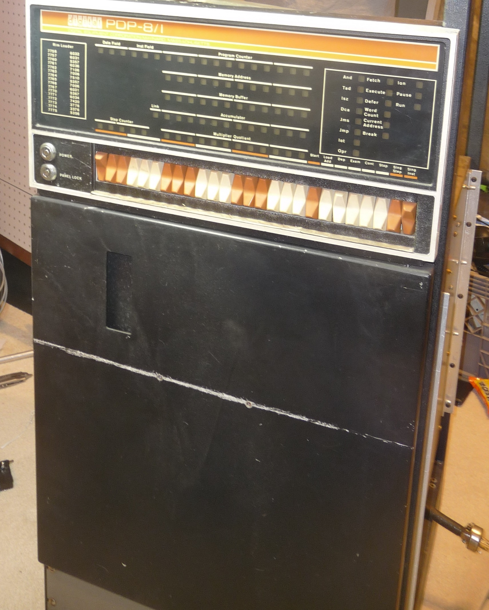here's what the backplane looks like:
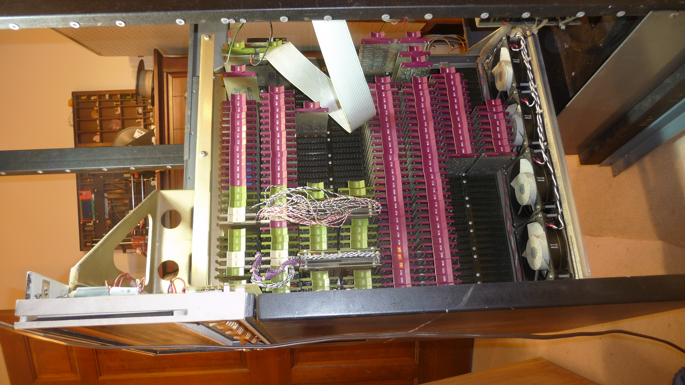I've got 8k of core, I think all of the CPU, no EAE or fast paper punch/reader, and half of the teletype interface is missing for some reason
spent some time cleaning out the dust.
then, after it was mostly clean, I took apart the PSU to start reforming these massive caps.
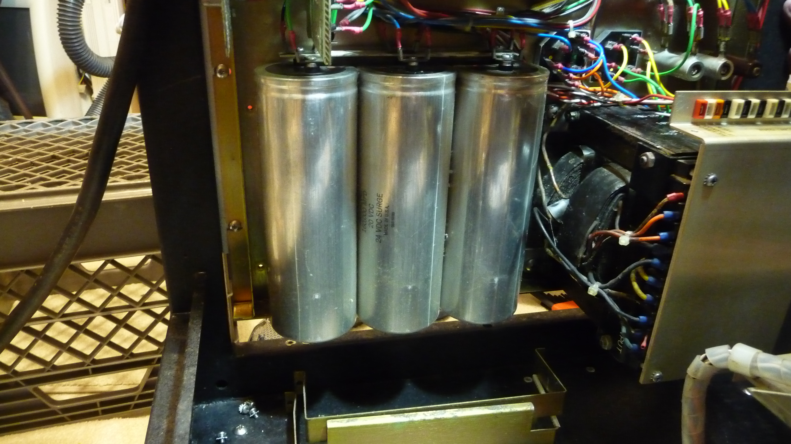I'm using a bench supply set to the rated voltage of the cap and current-limited to 20mA, as well as a ~20k resistor in series with each. Taking it nice and slow, probably going to leave it overnight to cook.
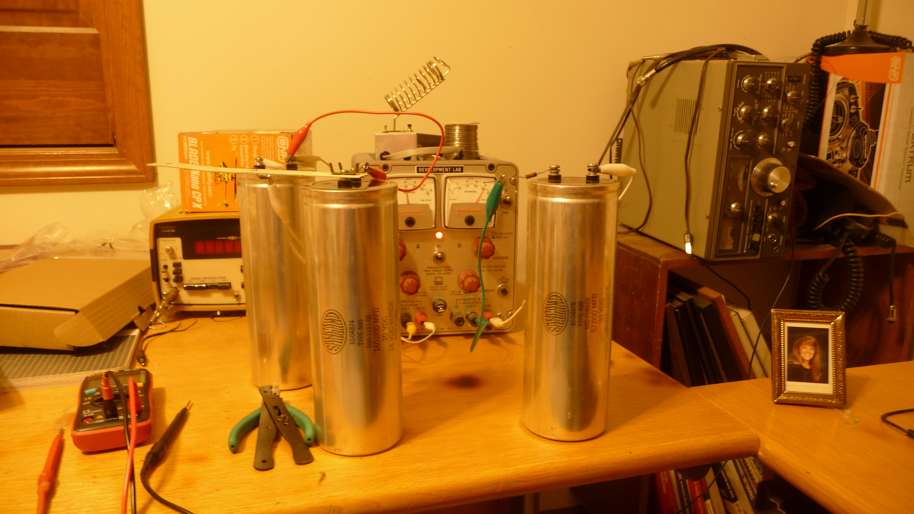also got a TU55 in with the deal, as well as the Pertec Diablo model 30 clone I was supposed to be buying (no good images of that yet); on a whim I put the tape drive up in the rack for a bit.
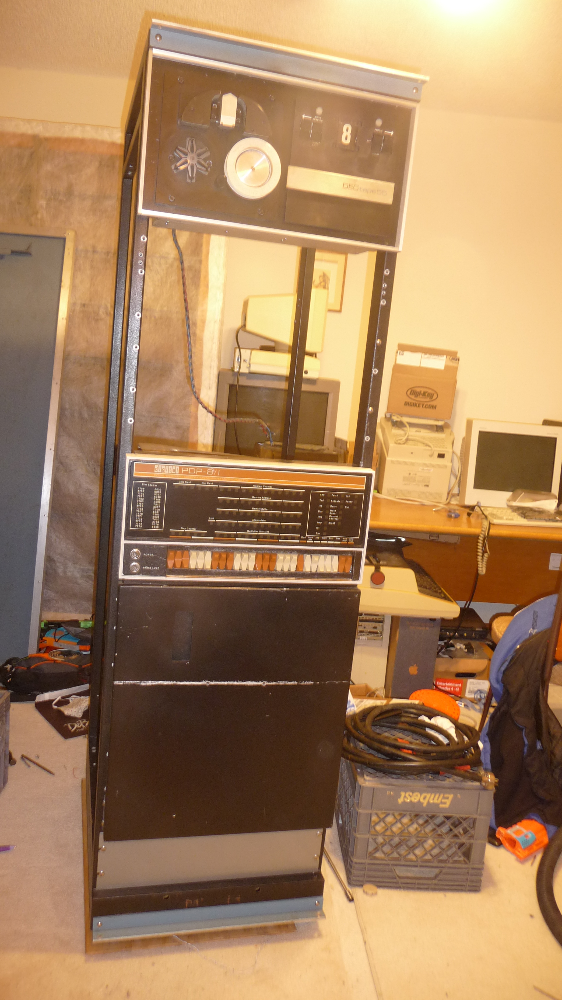looks nice, no?
Sun, Dec 27
More cleaning done. There was tons of grime on this thing, and whatever it is has something in it that both me and my dad are both allergic to. So I've been more or less tag-teaming with him to get it cleaned up.
It seems to be doing much better by now; it's still bad, but I think I've got a lot of the crap taken off.
The caps finished reforming, so I put the power supply back together, and tested it on a variac, using some small lightbulbs as (small) loads. I didn't get the key along with the machine, so the power switch off an old XT clone will suffice to turn on and off main power. All the voltages checked out fine.
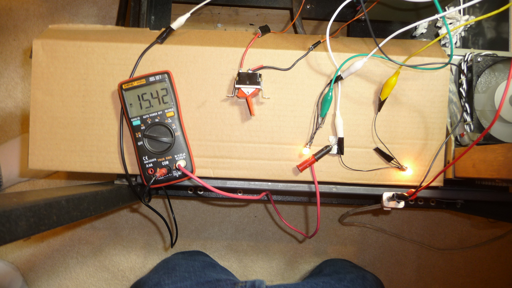Everything looked OK, so after a good bit of hesitation I cleared all the test leads out of the cabinet, connected everything, and powered it on.
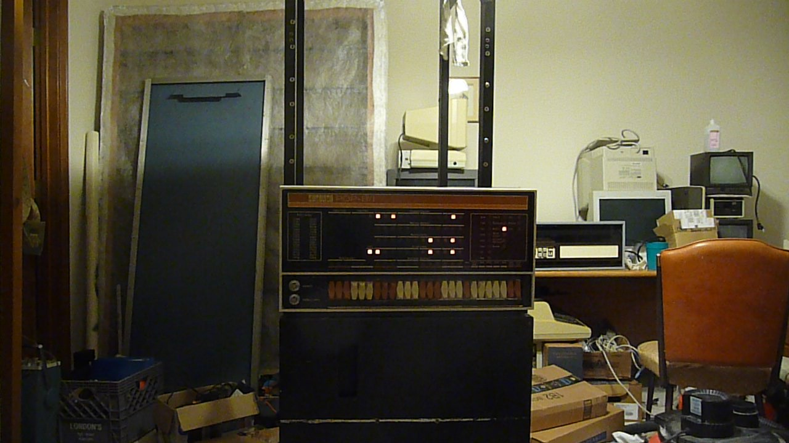It seems to sort of run and single-step, that is, the program counter and memory address lamps seem to increment through a number of addresses before jumping back to 0000. I can't seem to be able to examine or deposit values in core, but I can use the "LOAD ADD" switch to load values into the PC.
I also took the time to get the boards for a flip-chip tester on order, and I'm working on ordering a bunch of 74-series logic for the boards, and small lightbulbs for the frontpanel.
Thurs, Dec 31 I've been mostly cleaning on the machine while I wait for the parts for the flip chip tester to arrive. I've powered it on a few times, and I can already tell that most of the front panel lamps are dead, and will need replacing. They're on order from DigiKey along with the tester parts; I'll be able to know more once those are replaced.
until then, I've started taking each chip out, one at a time, cleaning them, and then putting them back. I've noticed that most of the chips have date codes around the 10-20'th week of '69, while the chassis has '12-23-68' written on it in large characters.
Fri, Jan 1, 2021 In anticipation of the new light bulbs (which should arrive tomorrow), me and my father took the front panel board out of the computer, since there were far too many bad bulbs to want to try to pull them out the front. However, once I had gotten the panel out of the computer, several bulbs fell, and about 10 more fell by the time I got it over to the table.
Turns out, a previous owner had replaced the lightbulbs; all of them. And he (or she?) had done it with what look like salvaged christmas tree lights, with their contacts bent over backwards to line up with the contact holes. This apparently had weakened the already-frail leads, and by the time I powered up the machine almost all of the bulbs had one or both leads broken.
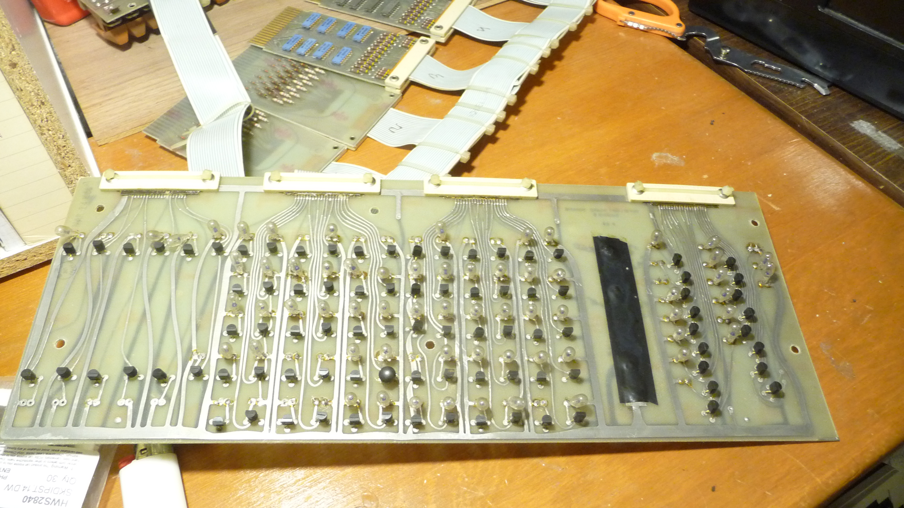Note how most bulbs are leaning one way or another. Those probably have one of two leads broken.
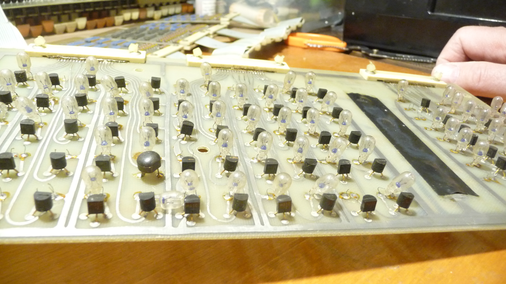Since most of the bulbs had at least one lead broken, and the very few that didn't seemed like they'd break extremely easily, I elected to simply remove them all, to be replaced when the replacements come tomorrow. I didn't expect to be doing this, but fortunately I ordered extra.
Board with all the lamps removed:
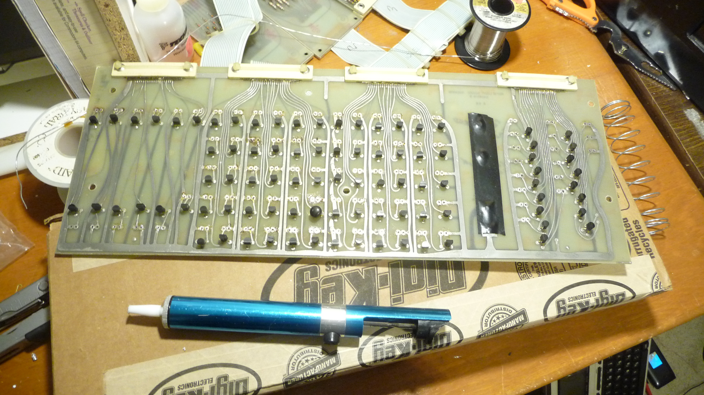Sun, Dec 10 ...and here's the board with the lamps back in.
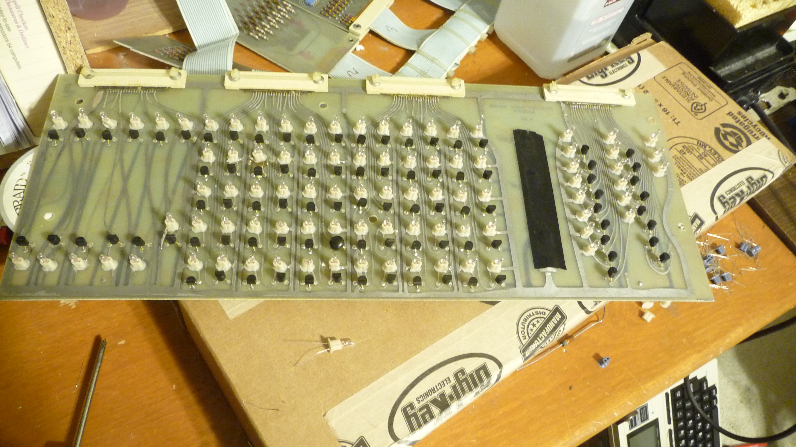Well it's been awhile. The flip-chip tester parts arrived, so I was able to build (and then debug) it. Ran most of my spares through it, and it seems to do well.
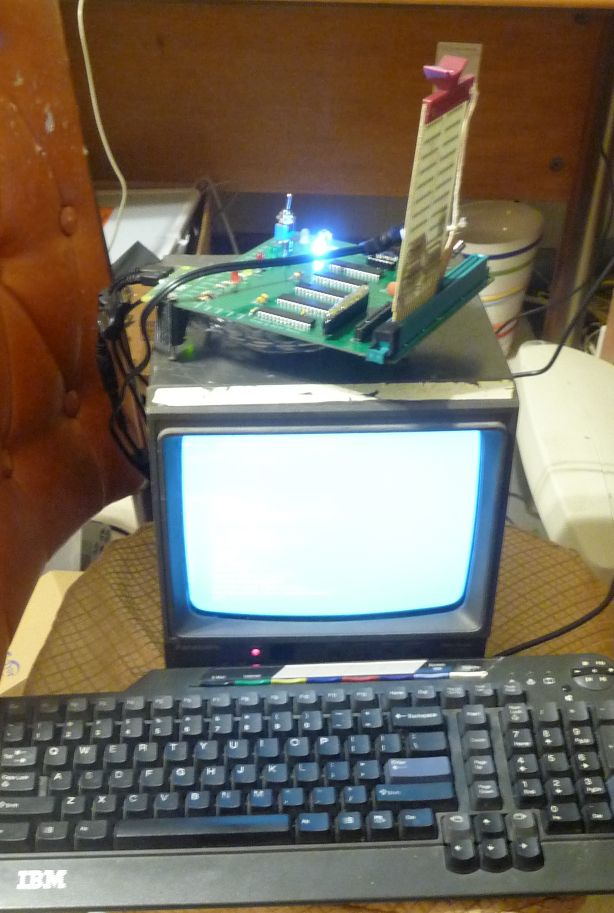I couldn't get a computer going that was new enough to run Windows XP (for which the software was originally written), but old enough to still have a parallel port, so I ended up using the Raspberry Pi version, with a spare Zero W I had lying about. In the image, you can see the first (and so far only) bad flip chip I've found with this thing.
I intend to clean the rest of the modules actually in the computer, then start in with testing each of them.
Tue, Dec 19 As of yesterday, I have moved to university for spring semester classes, so I won't be able to actually work on the 8/I until I get back home in the summer.
Since the last update I've tested most of the flip-chips using the flip-chip tester. I started with the 'low-hanging fruit': modules like the M113 that I can simply plug into the tester, hit a button, and get a yes/no answer almost immediately.
In this way I found three failed flip chips, two M113s and an M119. The M113s were replaced with tested spares, but I did not have any spares for the M119, nor did I have any 7430's to repair it with, so I tagged it as dead and moved on.
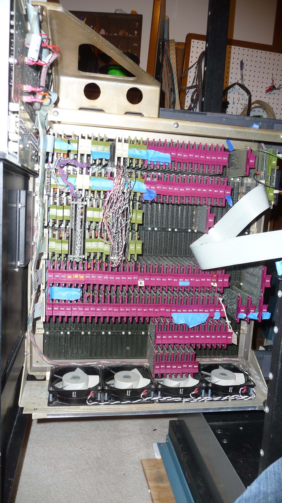The bluetape is a reminder to me of what I've done and what I haven't done. As I cleaned flip chips I put blue painters' tape on the handles, and as I tested chips, I took the tape back off. Some of the modules, such as the G series with no tape and the negibus I/O converters, haven't yet been cleaned (or tested) so they also don't have tape.
The two modules with tan masking tape are the ones that I replaced (marked 'R' for 'Replaced').
I also bought the tape controller! I had made the mistake of leaving with a TU55 but no TC01, and now that mistake is remedied. I even got the rack to put it in, or rather, the rack to leave it in, since the purpose of buying the rack along with the controller was because the TC01 itself is not held together by anything but wire-wrap wire, so attempting to take it out of the rack would risk damaging wires.
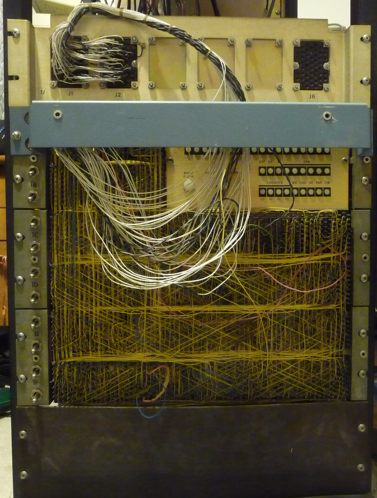More to come on that.